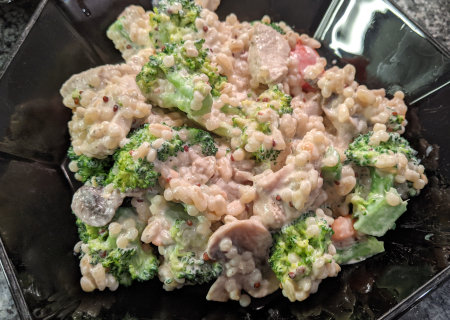

| Zutaten für 2 Personen: | |
| 120g | Ebly |
| 200g | Hühnchenbrustfilet |
| 3 Stangen | Staudensellerie |
| 250g | Champignons |
| 200g | Kirschtomaten |
| 60g | Reibkäse (Parmesan) |
| 1 El | Olivenöl |
| Salz, frisch gemahlener Pfeffer | |
| 100g | Kräuter Crème Fraîche |
Zubereitungsdauer: 25 Minuten
Ebly nach Packungsanweisung zubereiten (10 Minuten in Salzwasser).
Hühnchenbrustfilet waschen, trocken tupfen und in Würfel schneiden.
Sellerie putzen, waschen und in Stücke schneiden, Champignons putzen und in Scheiben schneiden. Tomaten waschen und halbieren. Käse grob reiben.
Öl in einer Pfanne erhitzen, Hühnchenbrustwürfel und Champignons kurz anbraten. Selleriestücke dazugeben und abgedeckt ca. 5-10 Minuten garen.
Ebly gut abtropfen lassen, mit den Tomaten in die Pfanne geben, kurz mit erhitzen und mit Salz und Pfeffer abschmecken.
Crème Fraîche in der Eblypfanne verteilen, mit dem Käse bestreuen und nach Wunsch mit Petersilie garniert servieren.
Tipp: Garnieren Sie die fertige Pfanne mit verschiedenen frischen, gehackten Kräutern. Dadurch wird das Gericht optisch noch ansprechender und erhält zusätzliches Aroma.
2830kJ, 675 kcal, Eiweiss: 46,90g, Fette: 32,00g, Kohlenhydrate: 50,00g
Hervorragend.
Am 28 Nov 2021 mit Brokkoli statt Stangensellerie zubereited (Bild).
@LINKBACK_TAG@ @WAKELOCK@